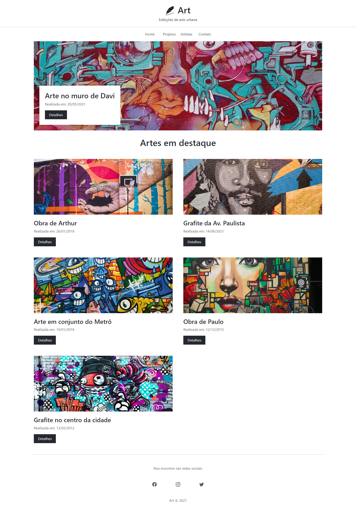

Art
Primeiro projeto do curso de Bootstrap 5
A proposta desse projeto é a utilização dos conhecimentos iniciais de Bootstrap em um site de exposição de arte urbana, são imagens de vários grafites, o que deu uma noção de como dividir as grids e desde o início se preocupando com a responsividade.
Acesse o projeto online clicando aqui
←Voltar ao portfolio